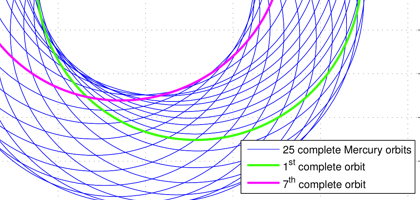
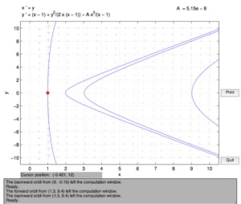

projects

Relativistic and non-relativistic orbits
May 10, 2012

ME275 is the first grad class I have taken at Cal and the third class I have taken with Professor O’Reilly. ME275’s course title is Advanced Dynamics and delves into Lagrangian and Hamiltonian equations of motion. The course culminates into an individual group project that further explores a concept previously learned in class.
After being exposed to the ideas of relativity in the class, Professor O’Reilly suggested I compare the Mercury’s orbit in the relativistic and non-relativistic case. For the uninitiated, non-relativistic is grounded in Newtonian gravity and that it is a force of attraction between two massive objects. The relativistic case is rooted in that planetary orbits are a result of the geometry of space-time, warped by gravity.
After setting forth the Lagrangian equations of motion for the two body system and applying a coordinate transformation, I plotted the system’s phase portrait using pplane to analyze their orbits.
For the non-relativistic case, the phase portrait is as shown:
The phase portrait for the relativistic case, near and far from the origin (left and right) is shown below:
As seen above, the non-relativistic orbits form closed loops, which is expected in order to produce the physical orbits (from circular to hyperbolic) we observed in the universe. However, the relativistic phase portraits tell us a slightly different message. In the far view, the phase portraits look similar in the sense that there are closed loops encircling a red dot, the equilibrium distance. However, for some initial conditions in the relativistic case, such as being close to the origin (0,0), the phase portrait goes haywire and demonstrates a behavior to converge on (1,0), as seen in the left top portrait. This strange behavior is actually a manifestation of a black hole, as predicted by Einstein’s theories. For initial conditions that pass beyond the vertical line at x = 1, it would implicate that the object has slipped beyond the event horizon of the black hole and would be lost forever. How’s that for cool?
Fortunately for us, relativistic effects (especially black holes) on orbits are only significant when the two bodies are extremely close to one another. Mercury is an example of a planet that is close enough to experience minor relativistic effects. Integrating the results of the aforementioned phase portraits, I reconstructed the Mercury’s physical orbits for the non-relativistic and relativistic case.
For the non-relativistic orbits, depending on your initial conditions with origin at (0,0), I saw that circular orbit (blue) can transform into more eccentric orbits (cyan) until finally it becomes parabolic and hyperbolic orbits (green and magenta, respectively). We can observe this in Earth, which has an orbit with low eccentricity and for comets, which has orbits that are highly hyperbolic.
For the relativistic case, I observed that changing the initial conditions generated a response characterized above. Irresistibly pretty, Mercury’s orbit precesses around the origin (0,0) as time goes on. In green, Mercury’s orbit for one Mercury year is shown. Six Mercury years later, Mercury’s orbit (magenta) will have precessed and be physically in a different place. This behavior was one of the supporting evidence for Einstein’s theories because Newtonian gravity couldn’t have explained this behavior that scientists and physicists observed. Now, I appreciate Einstein even more.
For a complete analysis of this work, which I have summarized above, you may download my paper. All figures were created in MATLAB.
Picture of Mercury’s orbit demonstrating a precession behavior due to relativistic effects predicted by Einstein.

